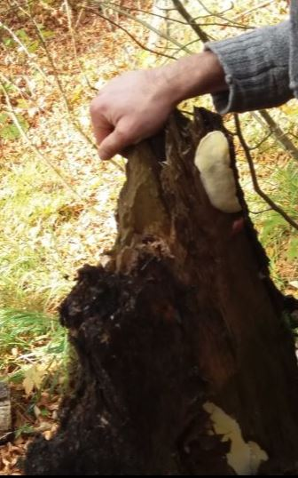
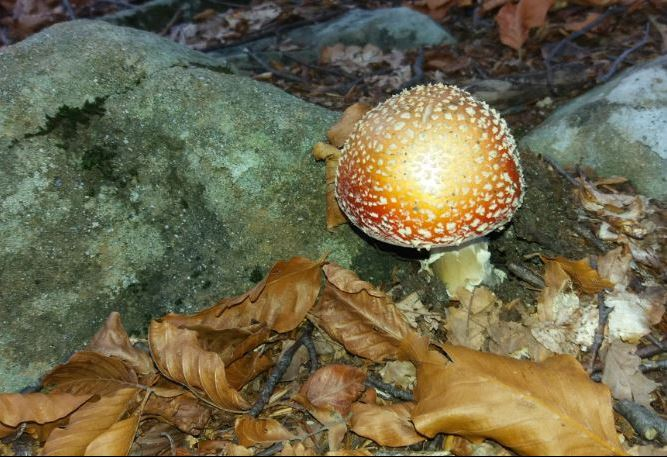

Tronco di abete con micelio attaccato
I funghi sono organismi decompositori formidabili riuscendo a riciclare una quantità enorme di sostanze diverse. Sono fondamentali per la salute della foresta e nell’immagine ne vediamo un esempio evidente; il micelio del fungo ha attaccato il legno dell’albero morto restituendone i materiali, piano piano, al suolo.

I funghi simbionti
Altrettanto importanti nella foresta sono i funghi simbionti che si collegano tramite le loro ife alle radici degli alberi potenziandone la capacità di assorbire acqua e sali minerali dal terreno. Dal canto suo il fungo usufruirà delle capacità foto sintetiche dell’albero visto che di per sé non ne è capace. Nella foto la graziosa Amanita muscaria, ma attenti .. questo fungo non è mangereccio!